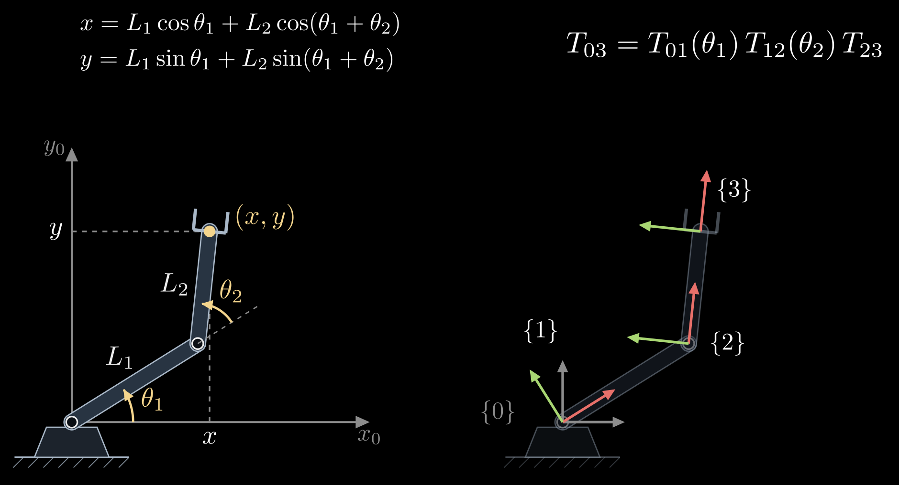
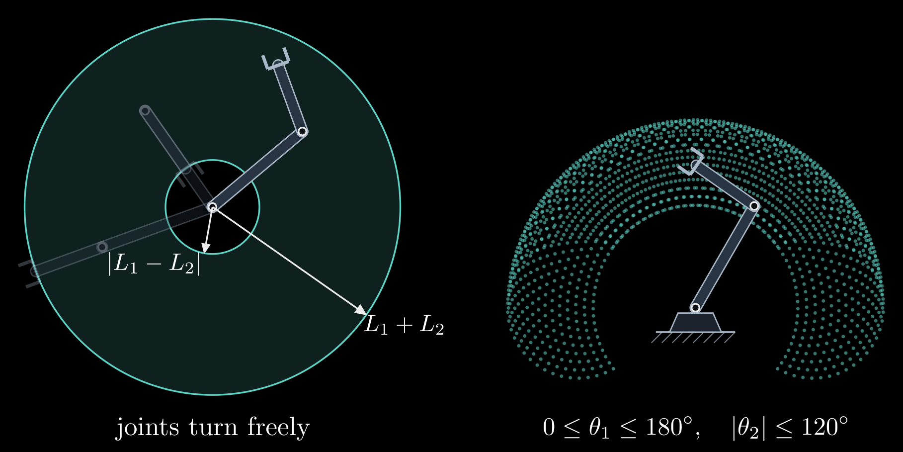
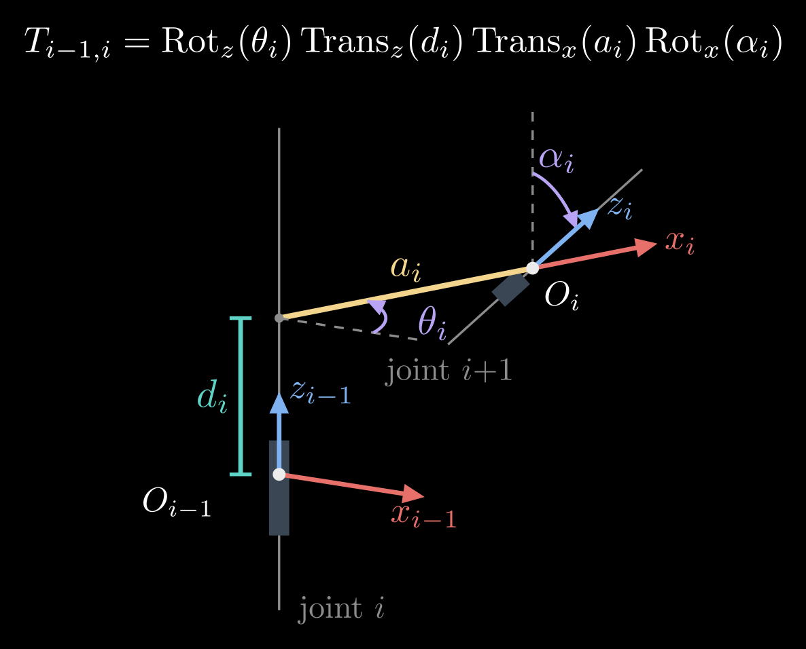
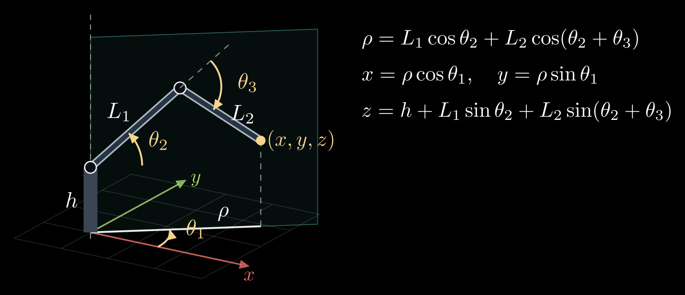

Forward Kinematics
A robot arm is a chain of rigid links joined by motorized joints. Each motor knows one number, the angle of its own joint, but tasks are described in space: where the gripper is and which way it points. Forward kinematics is the map from the joint angles to that pose. It is the easy direction of the problem: attach a coordinate frame to every link, write down the transform from each link's frame to the next one, which depends on a single joint angle, and multiply the transforms along the chain.
This is the second of four notes on robot arms, after 3D Rotations: Matrices, Euler Angles and Quaternions and before Inverse Kinematics and The Manipulator Jacobian.
Joints, configurations and the task space
The two common joints are revolute joints, which turn about an axis by an angle \(\theta\), and prismatic joints, which slide along an axis by a distance \(d\). An arm with \(n\) joints has \(n\) joint variables. For an arm with only revolute joints they form the joint vector \(\theta = (\theta_1, \dots, \theta_n)\), the arm's configuration, and the set of all configurations is the joint space.
The end-effector, the gripper or tool at the end of the chain, has a pose: a position and an orientation. In a plane that is three numbers, the position \((x, y)\) and a heading angle \(\varphi\); in space it is six, three for the position and three for the orientation. The set of these poses is the task space, and forward kinematics is a function from joint space to task space,
\[T_{0n} = f(\theta)\]
where \(T_{0n}\) is the homogeneous transformation matrix of the end-effector's frame {n} in the base frame {0}, the 4×4 matrix that holds a rotation and a position, introduced at the end of 3D Rotations: Matrices, Euler Angles and Quaternions. A rigid body's pose has six degrees of freedom, which is why general-purpose industrial arms have six joints.
A two-link arm in the plane
The simplest arm that shows everything is two links of lengths \(L_1\) and \(L_2\) moving in a plane, connected by two revolute joints whose axes point out of the plane (Figure 1). The base joint sits at the origin. The angle \(\theta_1\) is measured from the x axis to the first link, and \(\theta_2\) from the first link to the second, both counterclockwise. The elbow is at \((L_1\cos\theta_1,\, L_1\sin\theta_1)\), and the second link points at the angle \(\theta_1 + \theta_2\), because its joint is measured from the first link rather than from the x axis. Adding up the two links gives the hand position
\[x = L_1 \cos\theta_1 + L_2 \cos(\theta_1 + \theta_2), \qquad y = L_1 \sin\theta_1 + L_2 \sin(\theta_1 + \theta_2)\]
and the gripper's heading is \(\varphi = \theta_1 + \theta_2\). For example, with \(L_1 = L_2 = 1\), \(\theta_1 = 30^\circ\) and \(\theta_2 = 60^\circ\), the elbow is at (0.87, 0.5), the second link points straight up, and the hand is at (0.87, 1.5).

Figure 1. A two-link planar arm. Left: the joint angles \(\theta_1\) (from the x axis) and \(\theta_2\) (from the first link), the link lengths and the hand position \((x, y)\). Right: the same arm with a frame on every link: {0} fixed to the base, {1} turning with the first link, {2} at the elbow along the second link, {3} at the hand. Red arrows are x axes and green arrows y axes.
The same arm as a chain of transforms
Those formulas came from looking at the picture, which does not scale to six joints in 3D. The systematic way is to put a frame on each link and write the transform between neighboring frames. In a plane, a pose is a 3×3 homogeneous transform built from a turn and a shift:
\[\mathrm{Rot}(\theta) = \begin{bmatrix} \cos\theta & -\sin\theta & 0 \\ \sin\theta & \cos\theta & 0 \\ 0 & 0 & 1 \end{bmatrix}, \qquad \mathrm{Trans}_x(L) = \begin{bmatrix} 1 & 0 & L \\ 0 & 1 & 0 \\ 0 & 0 & 1 \end{bmatrix}\]
Rot(\(\theta\)) turns by \(\theta\) about the frame's origin, and Trans\(_x(L)\) moves a distance \(L\) along the frame's x axis. With the frames of Figure 1 (right):
- \(T_{01} = \mathrm{Rot}(\theta_1)\): frame {1} sits at the base, turned by the first joint.
- \(T_{12} = \mathrm{Trans}_x(L_1)\, \mathrm{Rot}(\theta_2)\): move along the first link to the elbow, then turn by the second joint.
- \(T_{23} = \mathrm{Trans}_x(L_2)\): move along the second link to the hand.
Multiplying in the order of the chain gives the pose of the hand frame in the base frame:
\[T_{03} = T_{01}\, T_{12}\, T_{23} = \begin{bmatrix} \cos(\theta_1 + \theta_2) & -\sin(\theta_1 + \theta_2) & x \\ \sin(\theta_1 + \theta_2) & \cos(\theta_1 + \theta_2) & y \\ 0 & 0 & 1 \end{bmatrix}\]
with \(x\) and \(y\) exactly as before: the upper-left 2×2 block is the gripper's heading and the last column its position.
Three habits make this work for any arm:
- Each factor depends on one joint variable only, so a robot is described by a list of fixed offsets plus one joint axis per link.
- The factors multiply in the order of the chain, from the base outward, and the inner subscripts cancel: \(T_{01}\,T_{12} = T_{02}\).
- A point given in the hand frame converts to base coordinates through \(T_{03}\). The tip of a tool that sticks out a distance \(\ell\) along the gripper, at \((\ell, 0)\) in frame {3}, is at \(T_{03}\, (\ell, 0, 1)^{\mathsf T}\) in frame {0}.
The workspace
The workspace is the set of positions the hand can reach. For the two-link arm with joints that turn all the way around, the hand's distance from the base, \(r = \sqrt{x^2 + y^2}\), can take any value from \(|L_1 - L_2|\), with the arm folded back on itself, to \(L_1 + L_2\), with the arm stretched out. The workspace is therefore a ring, an annulus (Figure 2). Equal links can fold the hand back onto the base; unequal ones leave a hole in the middle. Real arms have joint limits, which keep cables and links from colliding, and they carve the ring into a smaller shape.

Figure 2. The workspace of a two-link arm with \(L_1 > L_2\). Left: with both joints turning freely, the hand reaches the ring between the radii \(|L_1 - L_2|\) and \(L_1 + L_2\); the faint arms are fully stretched and fully folded. Right: with the joint limits written below it, the reachable positions (one dot per pair of joint angles on a grid) fill a smaller region.
Two facts about the ring matter for the next notes. Every point strictly inside it is reached by two configurations, elbow up and elbow down, mirror images of each other about the line from the base to the hand, which is why inverse kinematics has more than one answer. On its edges the arm is fully stretched or fully folded and only one configuration works; these are the configurations where the arm loses the ability to move its hand in some direction, the singularities of the Jacobian note.
In 3D one also distinguishes the reachable workspace, the positions the hand reaches with at least one orientation, from the dexterous workspace, the positions it reaches with every orientation. The second is always smaller, often much smaller.
Arms in 3D: Denavit–Hartenberg parameters
The joint axes of a spatial arm point in different directions, and placing a frame on every link by eye invites mistakes. The Denavit–Hartenberg (DH) convention, from 1955, places the frames by rule so that each link is described by four numbers. In its standard form:
- The z axis of frame {i−1}, \(z_{i-1}\), lies along the axis of joint i.
- The x axis of frame {i}, \(x_i\), lies along the common normal of \(z_{i-1}\) and \(z_i\), the shortest segment between the two joint axes, pointing away from \(z_{i-1}\).
- The origin \(O_i\) is where that common normal meets \(z_i\).
Four parameters then take frame {i−1} to frame {i} (Figure 3):
- \(\theta_i\), the joint angle: the turn about \(z_{i-1}\) that brings \(x_{i-1}\) parallel to \(x_i\). For a revolute joint this is the joint variable.
- \(d_i\), the offset: the distance along \(z_{i-1}\) from \(O_{i-1}\) to the common normal. For a prismatic joint this is the joint variable.
- \(a_i\), the link length: the length of the common normal, the distance between the two joint axes.
- \(\alpha_i\), the twist: the turn about \(x_i\) that brings \(z_{i-1}\) parallel to \(z_i\).

Figure 3. The four Denavit–Hartenberg parameters between two joint axes. The offset \(d_i\) runs along \(z_{i-1}\) from \(O_{i-1}\) to the common normal; the link length \(a_i\) is the common normal itself (yellow), which also gives the direction of \(x_i\); the joint angle \(\theta_i\) turns \(x_{i-1}\) (dashed copy) into \(x_i\) about \(z_{i-1}\); the twist \(\alpha_i\) turns \(z_{i-1}\) (dashed copy) into \(z_i\) about \(x_i\).
The transform from frame {i−1} to frame {i} is these four moves in order,
\[T_{i-1,i} = \mathrm{Rot}_z(\theta_i)\, \mathrm{Trans}_z(d_i)\, \mathrm{Trans}_x(a_i)\, \mathrm{Rot}_x(\alpha_i) = \begin{bmatrix} \cos\theta_i & -\sin\theta_i \cos\alpha_i & \sin\theta_i \sin\alpha_i & a_i \cos\theta_i \\ \sin\theta_i & \cos\theta_i \cos\alpha_i & -\cos\theta_i \sin\alpha_i & a_i \sin\theta_i \\ 0 & \sin\alpha_i & \cos\alpha_i & d_i \\ 0 & 0 & 0 & 1 \end{bmatrix}\]
where \(\mathrm{Rot}_z\) and \(\mathrm{Rot}_x\) turn about the named axis and \(\mathrm{Trans}_z\) and \(\mathrm{Trans}_x\) move along it, all written as 4×4 homogeneous transforms.
Four numbers suffice instead of the six of a general pose because the rules spend two: \(x_i\) has to meet \(z_{i-1}\), at a right angle. A robot's whole geometry becomes a table with one row \((\theta_i, d_i, a_i, \alpha_i)\) per joint, and its forward kinematics is the product \(T_{0n} = T_{01}\, T_{12} \cdots T_{n-1,n}\).
The planar two-link arm in this convention has both joint axes pointing out of the plane, so every offset and twist is zero, and its table has the rows \((\theta_1, 0, L_1, 0)\) and \((\theta_2, 0, L_2, 0)\). DH places frame {i} at the far end of link i, so here {1} sits at the elbow and {2} at the hand, and \(T_{01}\, T_{12}\) is the 4×4 version of the \(T_{03}\) found above. A sibling convention, the modified DH parameters of Craig's textbook, attaches frame {i} at the near end of link i instead. Both work, but their tables are not interchangeable, so check which one a paper or a robot manual uses.
A 3D example: the elbow arm
Many arms begin with a base joint about the vertical axis followed by a shoulder and an elbow about horizontal axes, like a human arm swinging in a vertical plane (Figure 4). Let the shoulder sit at a height \(h\) above the floor, let the upper arm and the forearm have lengths \(L_1\) and \(L_2\), and let \(\theta_1\) be the base angle about the vertical, \(\theta_2\) the shoulder's elevation above horizontal and \(\theta_3\) the elbow angle measured from the upper arm. The base joint only turns the vertical plane in which the arm moves, and within that plane the shoulder and the elbow form the two-link arm from before. With \(\rho\) the hand's horizontal distance from the vertical axis,
\[\rho = L_1 \cos\theta_2 + L_2 \cos(\theta_2 + \theta_3), \qquad x = \rho \cos\theta_1, \quad y = \rho \sin\theta_1, \quad z = h + L_1 \sin\theta_2 + L_2 \sin(\theta_2 + \theta_3)\]
The same result comes out of the DH table with the rows \((\theta_1, h, 0, 90^\circ)\), \((\theta_2, 0, L_1, 0)\) and \((\theta_3, 0, L_2, 0)\).

Figure 4. A three-joint elbow arm. The base angle \(\theta_1\) turns the vertical plane the arm moves in (shaded); inside that plane the shoulder angle \(\theta_2\) and the elbow angle \(\theta_3\) act like the planar two-link arm. \(\rho\) is the hand's horizontal distance from the base axis and \(h\) the shoulder height.
Forward kinematics in practice
- Robot description files, such as URDF in ROS, list for each joint the fixed transform from its parent link and the direction of its axis. Libraries such as KDL, Pinocchio and ROS's tf compute forward kinematics by chaining them, and the same chain places every camera and sensor mounted on the robot.
- Forward kinematics is cheap and always has exactly one answer: one product of \(n\) small matrices. The reverse question, which joint angles put the hand at a given pose, can have no answer, several or infinitely many, and it is the subject of the next note.
- The formulas are only as accurate as the link lengths and offsets in them. Kinematic calibration measures the hand at many configurations and solves for corrections to the DH parameters, which can improve an industrial arm's absolute accuracy several times over.